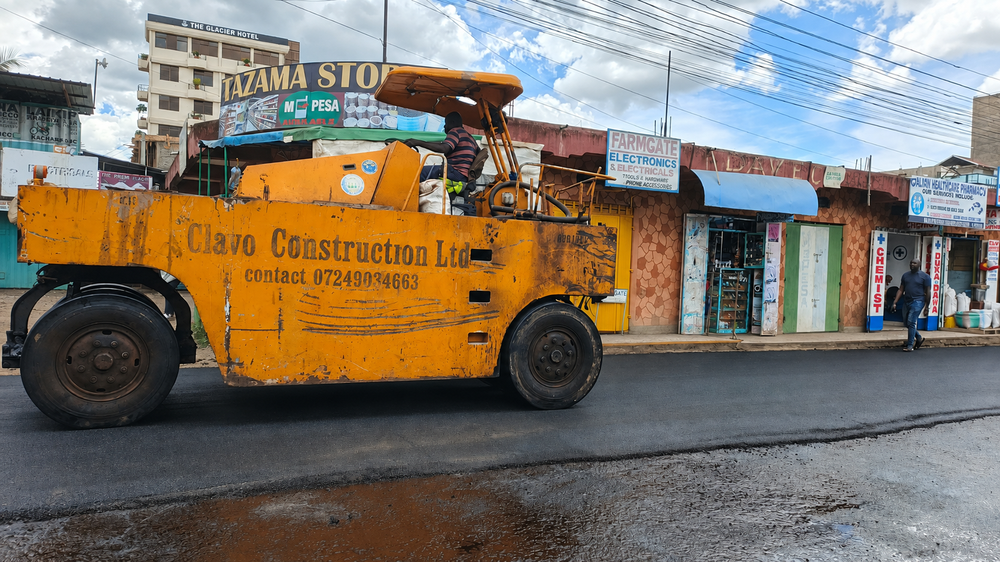
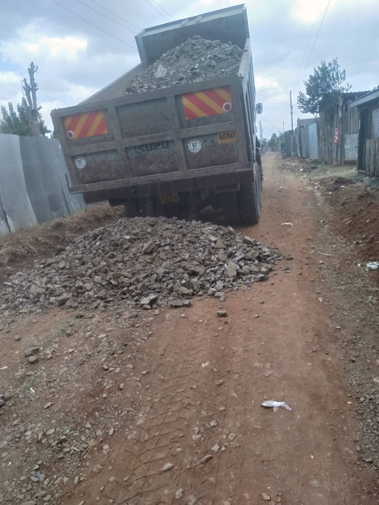
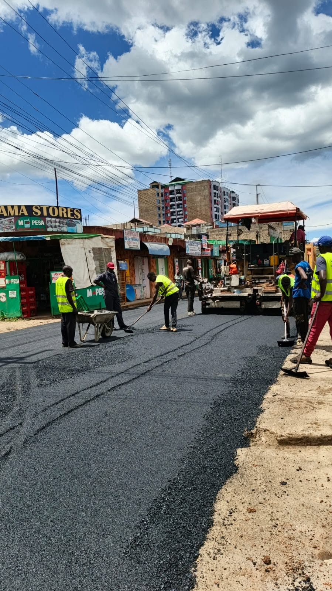

Engineering & civil works
Civil Engineering & Road Construction
From road grading and gravel surfacing to bitumen works and road protection systems, we deliver practical infrastructure solutions across Kenya.
What we deliver
Roadworks planned for performance, safety, and long-term value.
CLAVO Construction provides civil engineering and road construction services for county roads, private developments, institutional compounds, housing estates, and commercial access corridors across Kenya.
Our construction process covers the full road lifecycle, including site investigation, earthworks, drainage coordination, gravelling, bitumen surfacing, safety barriers, and final inspection for safe, durable use.
What happens
- Site assessment and road alignment
- Earthworks, cut-to-fill and formation
- Gravelling and sub-base preparation
- Bitumen surfacing and final paving
- Road safety features and handover
From ground to finished road
Every stage is coordinated for long-lasting performance.
Good roads depend on the work beneath the surface as much as the finished wearing course. We sequence site preparation, drainage, compaction, and pavement works to suit changing soil conditions, rainfall, and traffic demand.



Gravelling works
Sub-base preparation that supports lasting road performance.
Gravelling is a critical foundation stage for roads, access ways, and site works. We prepare the roadbed, spread suitable material, grade to the required levels, and compact the surface to create a stable platform that supports subsequent pavement layers or final use.
For Kenyan conditions, this work is especially important where soil strength, drainage, and seasonal rain can affect road stability. Proper gravelling reduces rutting, improves load distribution, and extends the useful life of the finished road.
- Material selection and grading control
- Roadbed preparation and drainage checks
- Layer spreading and shaping
- Compaction for stable support
- Grading for road geometry and runoff
- Quality monitoring before paving
Bitumen works
Durable surfacing for roads that carry regular traffic.
Bitumen surfacing adds a weather-resistant, load-bearing layer that improves durability, reduces dust, and supports safer movement for vehicles, pedestrians, and commercial transport. We coordinate the application process to ensure proper surface preparation, thickness, compaction, and finishing.
Whether the project is a local access road, institutional route, or broader infrastructure upgrade, bitumen works are applied with an emphasis on quality control and long-term value.
- Surface preparation and tack coating
- Hot mix and bitumen application
- Controlled spreading and finishing
- Compaction for long-term strength
- Improved ride quality and drainage flow
- Road rehabilitation and resealing support
Road barriers and protection
Safer roads, safer construction zones, and better traffic management.
Road barriers are essential for controlling movement, protecting workers, and improving safety around active sites, exposed drains, steep sections, and public road interfaces. We install barriers and traffic protection features in a way that supports safe site operations and reduces risk for motorists and pedestrians.
Our approach combines practical placement, durable materials, and site-specific planning to deliver clear safety protections where they are needed most.
- Temporary and permanent barrier placement
- Traffic management support
- Hazard protection at active work fronts
- Site edge and carriageway safety
- Improved visibility and public protection
- Compliance with safe site operations
Why Kenyan clients choose CLAVO
Practical road construction for real site conditions.
- Experienced in variable terrain and rainfall conditions
- Strong focus on drainage, compaction, and road stability
- Reliable coordination for county, institutional, and private projects
- Transparent project planning and quality-led execution
- Safety-conscious site management
- Long-term value for infrastructure investments
Start a conversation
Planning road construction, gravelling, or bitumen works in Kenya?
Tell us about your site, project scale, and intended outcomes. We will help develop a practical construction plan that fits your budget, timeline, and operational requirements.
Request a Quote